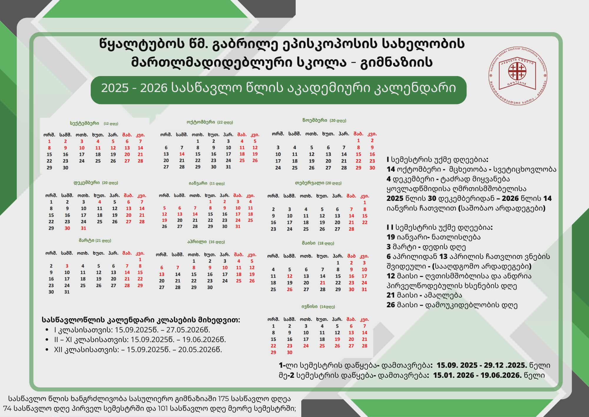

2025-2026 სასწავლო წლის კალენდარი და სამოქმედო გეგმა დამტკიცდა
სკოლა-გიმნაზიის პედაგოგიურმა საბჭომ დაამტკიცა ახალი სასწავლო წლის სამოქმედო გეგმა და საგნობრივი კათედრების პორტფოლიოები.
ვრცლად დოკუმენტებშიჩვენი მიზანია ტრადიციებზე დაფუძნებული, თანამედროვე სტანდარტების შესაბამისი განათლების უზრუნველყოფა, მოსწავლეთა ზნეობრივი, ინტელექტუალური და ფიზიკური განვითარება.

სკოლა-გიმნაზიის მფარველი და სულიერი წინამძღვარი
გამოჩენილი სასულიერო მოღვაწე, პედაგოგი, ეროვნული განათლებისა და ქართული ენის თავდადებული დამცველი (+1896)

წმიდა მღვდელმთავარი გაბრიელი (ქიქოძე) იყო იმერეთისა და აფხაზეთის ეპისკოპოსი, უდიდესი ქველმოქმედი და განმანათლებელი. მან დაარსა ასამდე სამრევლო სკოლა, აღადგინა 200-ზე მეტი ტაძარი და მტკიცედ აღუდგა წინ მშობლიური ქართული ენის შეზღუდვის ყოველგვარ მცდელობას.
სკოლა-გიმნაზიის ოფიციალური წესდება, შინაგანაწესი და სამუშაო ინსტრუქციები.
დოკუმენტების ნახვა2025-2026 სასწავლო წლის კალენდარი, არდადეგები და მნიშვნელოვანი თარიღები.
კალენდარზე გადასვლა„მწვანე დროშის" საერთაშორისო ტიტული და ნიკო კეცხოველის სასკოლო პრემია.
წარმატებების ნახვასკოლა-გიმნაზიის ყოველდღიური სასწავლო, კულტურული და სასულიერო ცხოვრება

სკოლა-გიმნაზიის პედაგოგიურმა საბჭომ დაამტკიცა ახალი სასწავლო წლის სამოქმედო გეგმა და საგნობრივი კათედრების პორტფოლიოები.
ვრცლად დოკუმენტებში
გიმნაზიის მოსწავლეებმა და პედაგოგებმა პატივი მიაგეს სკოლის მფარველ წმინდა გაბრიელ ეპისკოპოსის ხსოვნას და ჩაატარეს თემატური საღამო.
ვრცლად ნახვასკოლაში წარმატებით ჩატარდა საგნობრივი ოლიმპიადების პირველი ტური და ეკო-კლუბის ახალი პროექტების წარდგენა.
კლუბების ნახვა